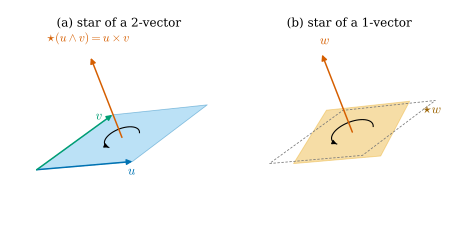
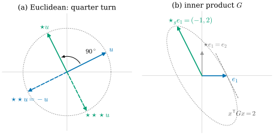

34.2 The Hodge Star
Goals
- inner product로 \(k\)-vector의 크기를 재고, 그것이 \(k\)차원 부피이며 그림자 넓이의 “피타고라스 정리”를 만족함을 설명할 수 있다.
- Hodge star를 “orthogonal complement를 펼치고 크기가 같으며 orientation이 맞는 \((n-k)\)-vector”로 정의하고, 그런 linear map이 꼭 하나 있음과 basis 공식 \(\star e_I = \pm e_{I^c}\)를 증명할 수 있다.
- \(\R^2\)에서 \(\star\)가 \(90^\circ\) 회전이고 \(\R^3\)에서 \(\star(u\wedge v) = u\times v\)임을 보이고, \(\star\star = (-1)^{k(n-k)}\)를 증명할 수 있다.
- \(\star\)가 inner product와 orientation에 의존한다는 것을 예로 보일 수 있다.
Prerequisites
- Definition 34.1.1 (k-vector), Proposition 34.1.6, Theorem 34.1.11 (basis k-vectors), Corollary 34.1.12
- Definition 1.5.1 (inner product), Proposition 1.5.9, Theorem 1.5.10 (Gram–Schmidt process), Proposition 1.5.13 (properties of the Gram matrix)
- Corollary 1.6.9 (Gram determinant and volume), Definition 1.6.11 (orientation), Definition 1.6.15 (cross product), Theorem 1.6.16
Motivation
Section 34.1의 네 규칙에는 inner product가 없었다. 그래서 두 가지가 남았다. 첫째, \(k\)-vector의 절대적인 크기를 말할 수 없었다. 같은 subspace 안의 부피의 비만 알았다(Proposition 34.1.9). 둘째, Example 34.1.10에서 \(\R^3\)의 \(u\wedge v = 2\,e_{12} + 5\,e_{13} + 4\,e_{23}\)과 \(u\times v = (4, -5, 2)\)가 같은 숫자를 담고 있었는데, 그 이유를 아직 모른다. cross product는 inner product와 orientation으로 정의되었다(Definition 1.6.15).
Crane은 Hodge star를 “subspace를 그 안의 vector 대신 그것과 수직인 vector로 기술한다”는 생각에서 출발한다 [Cr §4.1.3]. 이 생각은 Chapter 1에서 이미 썼다. cross product는 \(u, v\)가 펼치는 평면을 그 평면에 수직인 vector \(u\times v\) 하나로 기록한다. 이 절은 이 생각을 모든 \(k\)와 \(n\)으로 넓힌다. \(k\)-vector에 그 orthogonal complement를 펼치는 \((n-k)\)-vector를 대응시키되, 크기와 orientation까지 정한다. 수직은 inner product가 있어야 말할 수 있고 “어느 쪽 법선인가”는 orientation이 있어야 정할 수 있으므로, 이 절 내내 둘 다 고정한다.
이 절에서 \(V\)는 \(n\)차원 inner product space(Definition 1.5.1)이고 inner product는 \(\inner{u}{v}\), norm은 \(\abs{u}\)로 쓴다. \(V = \R^n\)이고 특별한 말이 없으면 유클리드 inner product와 standard orientation이다.
Lengths of k-Vectors
두 vector의 inner product를 \(k\)개씩 묶어 재는 가장 자연스러운 방법은 Gram matrix의 determinant다. Corollary 1.6.9에서 \(\sqrt{\det G}\)가 부피였다.
Proposition 34.2.1 (inner product of k-vectors). \(0 \le k \le n\)이라 하자.
- (a) \(\Lambda^kV\) 위에 모든 \(u_i, w_j \in V\)에 대하여
\[ \begin{aligned} &\inner{u_1\wedge\cdots\wedge u_k}{w_1\wedge\cdots\wedge w_k} \\ &\qquad = \det\big[\inner{u_i}{w_j}\big]_{i,j=1}^{k} \end{aligned} \tag{34.2.1} \]를 만족하는 bilinear form이 꼭 하나 있다(\(k = 0\)이면 \(\inner{a}{b} = ab\)).
- (b) 이것은 \(\Lambda^kV\)의 inner product이다. \((e_1, \dots, e_n)\)이 orthonormal basis이면 \((e_I)\)는 orthonormal basis이고, \(\xi = \sum_I \xi^I e_I\), \(\eta = \sum_I \eta^I e_I\)에 대하여 \(\inner{\xi}{\eta} = \sum_I \xi^I\eta^I\)이다.
- (c) \(\abs{u_1\wedge\cdots\wedge u_k} = \sqrt{\det G}\)이다. 여기서 \(G = \big[\inner{u_i}{u_j}\big]\)는 \((u_1, \dots, u_k)\)의 Gram matrix다. 이 값은 \(u_1, \dots, u_k\)가 만드는 parallelepiped의 \(k\)차원 부피다.
이 명제가 말하는 것. \(k\)-vector의 크기는 그것이 나타내는 조각의 \(k\)차원 부피이고, orthonormal basis에서는 성분의 제곱합의 제곱근이다. 성분이 그림자의 넓이였으므로(Example 34.1.10) “넓이의 제곱은 좌표평면 위 그림자 넓이의 제곱의 합”이 된다. 넓이에 대한 피타고라스 정리다.
Proof idea: (34.2.1)의 우변은 \(u\)들에 대해서도 \(w\)들에 대해서도 alternating multilinear이므로 Corollary 34.1.12를 두 번 쓰면 bilinear form이 생긴다. basis에서 값을 계산하면 나머지가 따른다.
Proof. (a) \(k = 0\)이면 분명하다. \(k \ge 1\)이고 \(w_1, \dots, w_k\)를 고정하자. \((u_1, \dots, u_k) \mapsto \det[\inner{u_i}{w_j}]\)는 \(i\)번째 행이 \(u_i\)에 대해 linear이므로 multilinear이고, 두 \(u\)가 같으면 두 행이 같아 \(0\)이다(Theorem 1.6.8(c)와 Lemma 1.6.2). Corollary 34.1.12에 의해 \(L_w(u_1\wedge\cdots\wedge u_k) = \det[\inner{u_i}{w_j}]\)인 linear map \(L_w\colon \Lambda^kV \to \R\)가 꼭 하나 있다. 이제 \(\xi \in \Lambda^kV\)를 고정하면 \((w_1, \dots, w_k) \mapsto L_w(\xi)\)는 alternating multilinear이다. \(\xi\)가 simple이면 같은 이유(이번에는 열)로 그렇고, 일반적인 \(\xi\)는 simple한 것의 합이며 \(L_w(\xi)\)는 \(\xi\)에 대해 linear이기 때문이다. 다시 Corollary 34.1.12를 쓰면 \(B(\xi, w_1\wedge\cdots\wedge w_k) = L_w(\xi)\)인, 둘째 자리에 대해 linear인 \(B(\xi, \cdot)\)가 생긴다. \(B\)는 첫째 자리에 대해서도 linear이다. simple \(\eta = w_1\wedge\cdots\wedge w_k\)에서는 \(B(\xi, \eta) = L_w(\xi)\)가 \(\xi\)에 대해 linear이고, 일반적인 \(\eta\)는 simple한 것의 합이며 \(B\)가 둘째 자리에 대해 linear이기 때문이다. 따라서 \(B\)는 bilinear이고 (34.2.1)을 만족한다. simple \(k\)-vector들이 \(\Lambda^kV\)를 span하므로(W3) 그런 bilinear form은 하나뿐이다.
(b) orthonormal basis는 있다(Theorem 1.5.10). \(B(e_I, e_J) = \det[\inner{e_{i_a}}{e_{j_b}}]_{a,b}\)이다. \(I = J\)이면 이 행렬은 identity matrix라 값이 \(1\)이다. \(I \neq J\)이면 \(J\)에 없는 \(i_a\)가 있고, 그 행 \(a\)는 모두 \(0\)이라 값이 \(0\)이다. 따라서 \(B(\xi, \eta) = \sum_I \xi^I\eta^I\)이고, 이것은 symmetric이며 \(\xi \neq 0\)이면 \(B(\xi, \xi) \gt 0\)이다. \(B\)의 정의 (a)에는 basis가 쓰이지 않았으므로 어느 orthonormal basis를 써도 같은 inner product다.
(c) 첫째 식은 (34.2.1)에서 \(w_j = u_j\)로 둔 것이다. \((u_i)\)가 linearly dependent이면 양변이 \(0\)이다(Proposition 34.1.8, 그리고 \(G\)의 열 사이에도 같은 관계가 있다). 아니면 \(W = \Span(u_1, \dots, u_k)\)의 orthonormal basis \((q_1, \dots, q_k)\)를 잡고(Theorem 1.5.10을 \(W\)에 쓴다) \(u_j = \sum_i A^i_j q_i\)로 쓰자. Proposition 1.5.13(c)에서 \(G = A^{\mathsf T}A\)이므로 \(\sqrt{\det G} = \abs{\det A}\)이다. \(W\)를 orthonormal 좌표 \((q_i)\)로 \(\R^k\)와 같이 보면 \(\abs{\det A}\)는 Corollary 1.6.9의 parallelepiped 부피다.
Example 34.2.2 (area of a parallelogram in space). Example 34.1.10의 \(u = (1, 2, 3)\), \(v = (-1, 0, 2)\)는 \(u\wedge v = 2\,e_{12} + 5\,e_{13} + 4\,e_{23}\)이다. Proposition 34.2.1(b)에서 \(\abs{u\wedge v}^2 = 2^2 + 5^2 + 4^2 = 45\)이고, (c)에서 \(\abs{u}^2\abs{v}^2 - \inner{u}{v}^2 = 14\cdot 5 - 5^2 = 45\)이다. 평행사변형의 넓이는 \(\sqrt{45} = 3\sqrt5\)이고, 세 그림자의 넓이는 \(2, 5, 4\)다(Figure 34.1.3). Example 1.6.18의 \(\abs{u\times v}^2 = 45\)와 같다.
Verification: verify/v-34-2-hodge.py
넓이의 피타고라스 정리는 평행사변형을 돌려 보면 더 분명해진다. Animation 34.2.1은 같은 \(u\wedge v\)를 축 \((1, 1, 1)\) 둘레로 한 바퀴 돌린다. 세 벽의 그림자는 커지고 작아지며, 넓이의 부호도 바뀐다(셋 다 한 번 이상 \(0\)을 지난다). 그러나 오른쪽 막대, 곧 세 그림자 넓이의 제곱을 쌓은 것은 언제나 점선 \(45\)에 닿는다. 돌리는 것은 길이를 보존하는 linear map이므로 평행사변형의 넓이 \(\sqrt{45}\)가 그대로이고, (b)에 의해 그것이 성분의 제곱합이기 때문이다.
Orthogonal Complements and the Unit Volume
inner product space \(V\)의 subspace \(W\)에 대하여, \(W\)의 모든 vector와 수직인 vector 전체를 \(W\)의 orthogonal complement(직교여공간)라 하고 \(W^\perp\)로 쓴다:
\(W^\perp\)는 linear functional \(x \mapsto \inner{x}{w}\)(\(w \in W\))들의 kernel의 교집합이므로 subspace다. \(W = \{0\}\)이면 \(W^\perp = V\)이고 \(W = V\)이면 \(W^\perp = \{0\}\)이다. \(\R^3\)에서 \(xy\)평면의 orthogonal complement는 \(z\)축이다. 이름과 달리 집합의 여집합 \(V\setminus W\)와는 다르다. \(W^\perp\)는 \(0\)을 포함하는 subspace이고, \(x \in W\cap W^\perp\)이면 \(\inner{x}{x} = 0\)이라 \(W\cap W^\perp = \{0\}\)이다. 또 수직은 inner product로 정해지므로 inner product를 바꾸면 \(W^\perp\)도 바뀐다(Example 34.2.10(b)). 필요한 성질을 정리해 두자.
Lemma 34.2.3 (adapted orthonormal basis). \(W\)가 \(V\)의 \(k\)차원 subspace이면 \((q_1, \dots, q_k)\)가 \(W\)의 basis인 \(V\)의 orthonormal basis \((q_1, \dots, q_n)\)이 있다. 그런 basis에서 \((q_{k+1}, \dots, q_n)\)은 \(W^\perp\)의 basis이므로 \(\dim W^\perp = n - k\)이다. \(V\)에 orientation이 있으면 \((q_1, \dots, q_n)\)을 positively oriented로 고를 수 있다.
Proof. \(W\)의 basis를 \(V\)의 basis로 늘리고(Theorem 1.1.18(b)) Gram–Schmidt(Theorem 1.5.10)를 쓰면 (1.5.2)에 의해 \(\Span(q_1, \dots, q_k) = W\)이다. \(x \in V\)는 \(x = \sum_i \inner{x}{q_i}\,q_i\)이다(Proposition 1.5.9(b)). \(x \in W^\perp\)이면 \(i \le k\)에서 \(\inner{x}{q_i} = 0\)이므로 \(x \in \Span(q_{k+1}, \dots, q_n)\)이다. 거꾸로 \(j \gt k\)인 \(q_j\)는 \(q_1, \dots, q_k\)와 수직이므로 그 linear combination인 \(W\)의 모든 vector와 수직이다. \(q_{k+1}, \dots, q_n\)은 orthonormal이라 linearly independent이다. 끝으로 negatively oriented이면 \(q_n\)을 \(-q_n\)으로 바꾼다. change-of-basis matrix \(\diag(1, \dots, 1, -1)\)의 determinant가 \(-1\)이므로 orientation이 바뀌고(Definition 1.6.11), 앞의 성질은 그대로다.
orientation이 있으면 “크기 \(1\)이고 positively oriented인 \(n\)차원 부피”가 꼭 하나 있다.
Proposition 34.2.4 (the unit n-vector). \(V\)에 orientation이 있다고 하자. positively oriented orthonormal basis \((e_1, \dots, e_n)\)은 어느 것을 골라도 같은 \(n\)-vector
를 준다. \(\abs{\mathrm{vol}} = 1\)이고, 임의의 basis \((b_1, \dots, b_n)\)에 대하여 \(b_1\wedge\cdots\wedge b_n = \pm\sqrt{\det G_b}\;\mathrm{vol}\)이다. 여기서 \(G_b\)는 \((b_i)\)의 Gram matrix이고, 부호는 \((b_i)\)가 positively oriented일 때 \(+\)다.
Proof. \((e_i)\)에서 \((b_i)\)로의 change-of-basis matrix를 \(B\)라 하자. Proposition 34.1.6(a)에서 \(b_1\wedge\cdots\wedge b_n = \det(B)\,e_1\wedge\cdots\wedge e_n\)이다. Proposition 1.5.13(c)에서 \(G_b = B^{\mathsf T}B\)이므로 \(\abs{\det B} = \sqrt{\det G_b}\)이고, \(\det B\)의 부호는 정의에 의해 orientation이 같은지를 말한다. \((b_i)\)도 positively oriented orthonormal이면 \(G_b = I\)이므로 \(\det B = 1\)이고 두 \(n\)-vector가 같다. \(\abs{\mathrm{vol}} = 1\)은 Proposition 34.2.1(b)이다.
The Hodge Star
먼저 그림을 보자. Figure 34.2.1의 (a)는 하늘색 평행사변형 \(u\wedge v\)와, 그 가운데에서 수직으로 선 주홍 화살표를 보여 준다. 이 화살표가 평행사변형의 orthogonal complement(수직선)를 펼치고, 길이가 평행사변형의 넓이와 같으며, 오른손 법칙으로 \(u\)에서 \(v\)로 도는 곡선 화살표와 맞는 쪽을 향한다. (b)는 거꾸로 주홍 vector \(w\)에서 출발한다. \(w\)에 수직인 평면 위에 넓이가 \(\abs{w}\)인 주황 정사각형을 놓고, \(w\)의 끝에서 내려다볼 때 반시계 방향인 orientation을 준다. 회색 점선은 (a)의 평행사변형이다. 모양은 다르지만 같은 평면, 같은 넓이, 같은 방향이라 같은 2-vector다(Proposition 34.1.9). 이 대응을 정확히 하자.

Definition 34.2.5 (Hodge star). \(V\)가 orientation이 있는 \(n\)차원 inner product space이고 \(0 \le k \le n\)이라 하자. linear map \(\star\colon \Lambda^kV \to \Lambda^{n-k}V\)가 \(0\)이 아닌 모든 simple \(k\)-vector \(\xi = u_1\wedge\cdots\wedge u_k\)와 \(W = \Span(u_1, \dots, u_k)\)에 대하여(\(k = 0\)이면 \(\xi\)는 \(0\)이 아닌 scalar이고 \(W = \{0\}\)) 다음 세 조건을 만족하면 \(\star\)를 Hodge star(호지 스타)라 한다.
- (H1) complement: \(W^\perp\)의 어떤 basis \((w_1, \dots, w_{n-k})\)에 대하여 \(\star\xi = w_1\wedge\cdots\wedge w_{n-k}\)이다(\(k = n\)이면 \(\star\xi\)는 scalar라는 뜻으로 읽는다).
- (H2) magnitude: \(\abs{\star\xi} = \abs{\xi}\)이다.
- (H3) orientation: \(\xi\wedge\star\xi\)는 \(\mathrm{vol}\)의 양수배다.
\(k \ge 1\)이면 (H3)은 \((u_1, \dots, u_k, w_1, \dots, w_{n-k})\)가 positively oriented라는 뜻이다. \(\xi\wedge\star\xi = u_1\wedge\cdots\wedge u_k\wedge w_1\wedge\cdots\wedge w_{n-k}\)이고, Proposition 34.2.4에 의해 이 값의 부호가 그 basis의 orientation이기 때문이다. 정의는 Crane의 것과 같다: 서로 수직인 단위 vector \(u_1, \dots, u_k\)에 대하여 \((u_1\wedge\cdots\wedge u_k)\wedge\star(u_1\wedge\cdots\wedge u_k)\)가 단위 \(n\)-vector가 되게 한다 [Cr §4.1.3]. 이런 linear map이 정말 있는지, 하나뿐인지는 정의만 보아서는 알 수 없다. 다음 정리가 그것을 보이고, 계산 공식도 준다.
basis 공식에 쓸 부호를 정하자. positively oriented orthonormal basis \((e_i)\)와 increasing multi-index \(I\)에 대하여, \(\{1, \dots, n\}\setminus I\)를 작은 것부터 늘어놓은 것을 \(I^c\)라 하자. \(e_I\wedge e_{I^c}\)는 \(e_1, \dots, e_n\)을 한 번씩 재배열해 wedge한 것이므로 Proposition 34.1.3(b)에 의해 \(\pm\mathrm{vol}\)이다. 그 부호를 \(\sgn(I, I^c)\)로 쓴다:
예를 들어 \(n = 3\)이면 \(e_1\wedge e_{23} = \mathrm{vol}\), \(e_2\wedge e_{13} = -\mathrm{vol}\), \(e_{13}\wedge e_2 = -\mathrm{vol}\)이다. \(\sgn(I, I^c)\)는 수열 \((I, I^c)\)를 \((1, \dots, n)\)으로 정렬하는 permutation의 부호이고, 계산법은 Proposition 34.5.2에 있다.
Theorem 34.2.6 (existence, uniqueness, and the basis formula). \(V\)가 orientation이 있는 \(n\)차원 inner product space이고 \(0 \le k \le n\)이라 하자.
- (a) Hodge star \(\star\colon \Lambda^kV \to \Lambda^{n-k}V\)는 꼭 하나 있다.
- (b) 모든 positively oriented orthonormal basis \((e_i)\)와 모든 \(I\)에 대하여
\[ \begin{gathered} \star e_I = \sgn(I, I^c)\; e_{I^c}, \\ \text{in particular}\quad e_I\wedge\star e_I = \mathrm{vol}. \end{gathered} \tag{34.2.5} \]
- (c) 모든 \(\zeta, \xi \in \Lambda^kV\)에 대하여 \(\zeta\wedge\star\xi = \inner{\zeta}{\xi}\;\mathrm{vol}\)이다.
이 정리가 말하는 것. Hodge star는 각 좌표 \(k\)-평면을 그것에 수직인 좌표 \((n-k)\)-평면으로 보내고, 둘을 이어 붙인 것이 양의 단위 부피가 되도록 부호를 붙인다. 이 규칙은 어느 positively oriented orthonormal basis로 계산해도 같은 map을 준다.
Proof idea: \(e_I\)에 대해서는 (H1)–(H3)이 \(\star e_I\)를 완전히 정하므로 유일성이 나온다. 존재는 basis 공식으로 map을 만들고, 그것이 basis에 무관한 성질 (c)로 특징지어진다는 것을 보인다. 그러면 아무 simple \(\xi\)에 맞춘 basis로 계산해 (H1)–(H3)을 확인할 수 있다.
Proof. positively oriented orthonormal basis \((e_i)\)를 하나 고정하자.
1단계(유일성과 (b)). \(\star\)가 Hodge star라 하자. \(\xi = e_I\)이면 \(W = \Span(e_i : i \in I)\)이고 \(W^\perp = \Span(e_j : j \in I^c)\)이다(Lemma 34.2.3). (H1)의 \((w_1, \dots, w_{n-k})\)는 \(W^\perp\)의 basis이므로 Proposition 34.1.6(a)에 의해 \(\star e_I = c\,e_{I^c}\)(\(c \neq 0\))이다(\(k = n\)이면 \(e_{I^c} = 1\)). Proposition 34.2.1(b)에서 \(\abs{e_I} = \abs{e_{I^c}} = 1\)이므로 (H2)는 \(\abs{c} = 1\)이고, (H3)은 \(e_I\wedge c\,e_{I^c} = c\,\sgn(I, I^c)\,\mathrm{vol}\)이 양수배라는 것이므로 \(c = \sgn(I, I^c)\)이다. linear map은 basis \((e_I)\)(Theorem 34.1.11) 위의 값으로 정해지므로 Hodge star는 많아야 하나이고, 있다면 (34.2.5)를 만족한다.
2단계(후보). basis 위에서 \(\star_e e_I := \sgn(I, I^c)\,e_{I^c}\)로 정한 linear map을 \(\star_e\)라 하자. \(\zeta = e_J\), \(\xi = e_I\)이면, \(J \neq I\)일 때 \(J\)에 있고 \(I\)에 없는 첨자가 \(I^c\)에 있으므로 \(e_J\wedge e_{I^c} = 0\)이고, \(J = I\)일 때 \[ e_I\wedge\sgn(I, I^c)e_{I^c} = \sgn(I, I^c)^2\,\mathrm{vol} = \mathrm{vol} \]이다. 즉 \(e_J\wedge\star_e e_I = \delta_{IJ}\,\mathrm{vol} = \inner{e_J}{e_I}\,\mathrm{vol}\)이다. 양변이 \(\zeta, \xi\)에 대해 bilinear이므로 모든 \(\zeta, \xi\)에 대해 \(\zeta\wedge\star_e\xi = \inner{\zeta}{\xi}\,\mathrm{vol}\)이다.
3단계(\(\star_e\)는 \(e\)에 무관하다). \(\eta \in \Lambda^{n-k}V\)가 모든 \(\zeta \in \Lambda^kV\)에 대해 \(\zeta\wedge\eta = 0\)이면 \(\eta = 0\)이다. \(\eta = \sum_K c_K e_K\)(\(K\)는 길이 \(n-k\))로 쓰고 \(\zeta = e_{K^c}\)를 넣으면 2단계와 같은 이유로 \(c_K\)의 항만 남아 \(0 = \pm c_K\,\mathrm{vol}\)이기 때문이다. 따라서 \(\star_e\xi\)는 “모든 \(\zeta\)에 대해 \(\zeta\wedge\eta = \inner{\zeta}{\xi}\,\mathrm{vol}\)”을 만족하는 유일한 \(\eta\)다. 이 조건에는 \(\inner{\cdot}{\cdot}\)(Proposition 34.2.1)과 \(\mathrm{vol}\)(Proposition 34.2.4)만 쓰이고 둘 다 basis에 무관하므로, 다른 positively oriented orthonormal basis \((q_i)\)에 대해서도 \(\star_q = \star_e\)이다.
4단계(\(\star_e\)는 Hodge star다). \(0\)이 아닌 simple \(\xi = u_1\wedge\cdots\wedge u_k\)와 \(W = \Span(u_i)\)에 대하여 Lemma 34.2.3으로 \(W\)에 맞춘 positively oriented orthonormal basis \((q_1, \dots, q_n)\)을 잡자. \(u_j = \sum_{i \le k} A^i_j q_i\)로 쓰면 \(\xi = c\,q_1\wedge\cdots\wedge q_k\), \(c = \det A\)이고(Proposition 34.1.6(a); \(k = 0\)이면 \(c = \xi\)), Proposition 34.2.1에서 \(\abs{c} = \abs{\xi} \neq 0\)이다. \((1, \dots, k, k+1, \dots, n)\)은 이미 정렬되어 있으므로 3단계와 (34.2.5)에서
\[ \star_e\xi = \star_q\xi = c\; q_{k+1}\wedge\cdots\wedge q_n \]
이다. (H1): \(\star_e\xi\) \(= (c\,q_{k+1})\wedge q_{k+2}\wedge\cdots\wedge q_n\)이고 이 인자들은 \(W^\perp\)의 basis다(Lemma 34.2.3; \(k = n\)이면 \(\star_e\xi = c\)). (H2): \(\abs{\star_e\xi} = \abs{c} = \abs{\xi}\). (H3): \(\xi\wedge\star_e\xi = c^2\,q_1\wedge\cdots\wedge q_n = c^2\,\mathrm{vol}\). 따라서 \(\star := \star_e\)가 Hodge star이고, (c)는 2단계다.
Examples in the Plane and in Space
Example 34.2.7 (the plane: a quarter turn). \(n = 2\)이면 \(I\)는 \(()\), \((1)\), \((2)\), \((1,2)\)이고 (34.2.4)에서 \(\sgn((1), (2)) = +1\), \(\sgn((2), (1)) = -1\)(\(e_2\wedge e_1 = -\mathrm{vol}\))이다. 따라서
이다. vector에 대해서는 \(\star(a, b) = (-b, a)\), 즉 반시계 방향 \(90^\circ\) 회전이다. Chapter 1의 \(b_1 = (2, 1)\)이면 \(\star b_1 = (-1, 2)\)이고 \(\star\star b_1 = -b_1\)이다.
Verification: verify/v-34-2-hodge.py
Figure 34.2.2의 (a)를 보자. 파란 \(u = b_1\)에 \(\star\)를 한 번 쓸 때마다 반시계 방향으로 \(90^\circ\)씩 돈다(초록 실선 \(\star u\), 파란 점선 \(\star\star u = -u\), 초록 점선 \(\star\star\star u\)). 네 번 쓰면 제자리다. 길이는 모두 \(\abs{u} = \sqrt5\)라 점선 원 위에 있고, \(\star u\)는 원의 \(u\)에서의 접선 방향이다. (b)는 다음 예에서 설명한다.

Proposition 34.2.8 (Hodge star and the cross product). \(\R^3\)(유클리드 inner product, standard orientation)에서 모든 \(u, v\)에 대하여 \(\star(u\wedge v) = u\times v\)이다. 또
이다.
이 명제가 말하는 것. cross product는 “wedge한 뒤 Hodge star를 쓴 것”이다. cross product가 \(\R^3\)에서만 vector를 주는 이유는 \(n - 2 = 1\)인 \(n\)이 \(3\)뿐이기 때문이다. 다른 차원에서도 \(u\wedge v\)와 \(\star(u\wedge v)\)는 정의되지만 \(\star(u\wedge v)\)는 \((n-2)\)-vector다.
Proof. \((u, v)\)가 linearly dependent이면 양변이 \(0\)이다(Proposition 34.1.8, Theorem 1.6.16(c)). linearly independent이면 \(\xi = u\wedge v\), \(W = \Span(u, v)\)라 하자. Theorem 1.6.16(b)에 의해 \(u\times v \neq 0\)은 \(u, v\)에 수직이므로 \(W^\perp\)(dimension \(1\))의 basis다. (d)와 Proposition 34.2.1(c)에서 \(\abs{u\times v}^2 = \abs{u}^2\abs{v}^2 - \inner{u}{v}^2 = \abs{u\wedge v}^2\)이고, (e)에서 \((u, v, u\times v)\)는 positively oriented이다. 한편 Hodge star \(\star\xi\)는 (H1)에 의해 \(W^\perp\)의 vector, 즉 \(\star\xi = c\,(u\times v)\)이고, (H2)에서 \(\abs{c} = 1\), (H3)에서 \((u, v, c\,u\times v)\)가 positively oriented이므로 \(c = 1\)이다. 표 (34.2.7)은 (34.2.5)와 (34.2.4)의 부호에서 나온다. 예를 들어 \(e_{13}\wedge e_2 = -\mathrm{vol}\)이므로 \(\star e_{13} = -e_2\)이고, \(e_2\wedge e_{13} = -\mathrm{vol}\)이므로 \(\star e_2 = -e_{13}\)이다.
Example 34.1.10의 수수께끼가 풀린다. \(u\wedge v = 2\,e_{12} + 5\,e_{13} + 4\,e_{23}\)에 (34.2.7)을 쓰면 \[ \star(u\wedge v) = 2\,e_3 - 5\,e_2 + 4\,e_1 = (4, -5, 2) = u\times v \]이다. cross product의 \(i\)번째 성분은 \(e_i\)에 수직인 좌표평면 위 그림자의 넓이이고, 부호는 그 평면에 \(\star e_i\)가 주는 orientation으로 잰 것이다.
Proposition 34.2.9 (star twice). \(\xi \in \Lambda^kV\)이면 \(\star\star\xi = (-1)^{k(n-k)}\,\xi\)이다. 따라서 \(\star\)는 isomorphism이고 \(\star^{-1} = (-1)^{k(n-k)}\star\)이며, 모든 \(\xi\)에 대하여 \(\abs{\star\xi} = \abs{\xi}\)이다(isometry).
이 명제가 말하는 것. complement의 complement는 원래 것이고, 부호만 \(k(n-k)\)의 홀짝으로 정해진다. \(\R^3\)에서는 \(k(3-k)\)가 언제나 짝수라 \(\star\star = 1\)이다. \(\R^2\)의 vector에서는 \(k(n-k) = 1\)이라 \(\star\star = -1\), 반 바퀴 회전이다(Figure 34.2.2(a)).
Proof. positively oriented orthonormal basis에서 basis \(k\)-vector만 확인하면 된다(linearity). (34.2.5)를 두 번 쓰면 \[ \star\star e_I = \sgn(I, I^c)\,\star e_{I^c} = \sgn(I, I^c)\,\sgn(I^c, I)\,e_I \]이다(\((I^c)^c = I\)). Proposition 34.1.3(c)에서 \(e_{I^c}\wedge e_I = (-1)^{k(n-k)}\,e_I\wedge e_{I^c}\)이므로 \(\sgn(I^c, I) = (-1)^{k(n-k)}\sgn(I, I^c)\)이고, \(\sgn(I, I^c)^2 = 1\)이므로 \(\star\star e_I = (-1)^{k(n-k)}e_I\)이다. 그러면 \(\star\)는 inverse map \((-1)^{k(n-k)}\star\)을 갖는다. 끝으로 \(\star\)는 orthonormal basis \((e_I)\)를 orthonormal basis \((\pm e_{I^c})\)로 보내므로 성분의 제곱합을 보존한다(Proposition 34.2.1(b)).
Example 34.2.10 (dependence on orientation and inner product). (a) orientation을 반대로 하면 \(\mathrm{vol}\)이 \(-\mathrm{vol}\)이 되므로 (H3)에 의해 \(\star\)가 \(-\star\)로 바뀐다. 예를 들어 \(\R^2\)에 \((e_2, e_1)\)이 속한 orientation을 주면 \(\star e_1 = -e_2\), 즉 시계 방향 회전이다. 같은 이유로 \(\R^3\)에서 orientation을 바꾸면 “왼손 cross product” \(-u\times v\)가 나온다.
(b) inner product를 바꾸면 \(\star\)의 값이 바뀐다. \(\R^2\)에 \(g(x, y) = x^{\mathsf T}Gy\), \(G = \begin{pmatrix} 2 & 1 \\ 1 & 1\end{pmatrix}\)(\(\det G = 1 \gt 0\), \(2 \gt 0\)이므로 positive definite)와 standard orientation을 주자. \(\star_g e_1\)을 (H1)–(H3)으로 구한다. \(W = \Span(e_1)\)의 \(g\)-orthogonal complement는 \(g(e_1, x) = 2x^1 + x^2 = 0\)인 \(x\) 전체, 즉 \(\Span\big((-1, 2)\big)\)이다. \(\abs{e_1}_g^2 = 2\)이고 \(\abs{(-1, 2)}_g^2 = 2 - 4 + 4 = 2\)이므로 (H2)는 \(\star_g e_1 = \pm(-1, 2)\)를 준다. \(\det[e_1\ (-1, 2)] = 2 \gt 0\)이므로 (H3)에 의해
\[ \star_g e_1 = (-1, 2) \neq e_2 = \star e_1 \]
이다. Figure 34.2.2(b)에서 초록 \(\star_g e_1\)은 회색 \(e_2\)와 방향이 다르다. 그러나 점선 타원(\(g\)-길이가 \(\sqrt2\)인 vector들, 즉 \(g\)로 잰 “원”) 위에 있고, 그 타원의 \(e_1\)에서의 접선(회색 점선)과 평행하다. 유클리드 그림 (a)에서 \(\star u\)가 원의 접선 방향이었던 것과 같은 구도다. inner product가 바뀌면 “수직”과 “같은 길이”가 바뀌므로 \(\star\)도 바뀐다.
Verification: verify/v-34-2-hodge.py
Summary
- inner product는 \(\Lambda^kV\)의 inner product \(\inner{u_1\wedge\cdots}{w_1\wedge\cdots} = \det[\inner{u_i}{w_j}]\)를 준다. \(k\)-vector의 크기는 \(k\)차원 부피이고, orthonormal basis에서 \((e_I)\)는 orthonormal이다(Proposition 34.2.1).
- orientation을 더하면 단위 \(n\)-vector \(\mathrm{vol}\)이 정해진다(Proposition 34.2.4).
- Hodge star는 simple \(k\)-vector를 orthogonal complement를 펼치고 크기가 같으며 \(\xi\wedge\star\xi\)가 positively oriented인 \((n-k)\)-vector로 보내는 linear map이다(Definition 34.2.5). 꼭 하나 있고 \(\star e_I = \sgn(I, I^c)\,e_{I^c}\), \(\zeta\wedge\star\xi = \inner{\zeta}{\xi}\,\mathrm{vol}\)이다(Theorem 34.2.6).
- \(\R^2\)의 vector에서 \(\star\)는 \(90^\circ\) 회전이고, \(\R^3\)에서 \(\star(u\wedge v) = u\times v\)이다. \(\star\star = (-1)^{k(n-k)}\)이고 \(\star\)는 isometry다(Proposition 34.2.8, Proposition 34.2.9).
- \(\star\)는 inner product와 orientation에 의존한다(Example 34.2.10).
다음 절에서는 inner product의 또 다른 쓰임을 본다. vector를 “재는 도구”인 covector로 바꾸는 flat \(\flat\)과 그 역 sharp \(\sharp\)이다. Chapter 1에서 본 isomorphism을 측정의 언어로 다시 읽고, 그것이 inner product에 따라 어떻게 달라지는지 그림으로 확인한다.
Exercises
Exercise 34.2.1 ★ \(\R^3\)(standard)에서 (a) \(\xi = e_{12} - 3\,e_{23}\)의 \(\star\xi\)와 (b) \(u = (1, -1, 2)\)의 \(\star u\)를 \(e_I\)로 써라. (b)에서 \(\star\star u = u\)와 \(\abs{\star u} = \abs{u}\)를 확인하여라.
Solution
(a) (34.2.7)에서 \(\star\xi = e_3 - 3\,e_1 = (-3, 0, 1)\)이다. (b) \(\star u = \star e_1 - \star e_2 + 2\star e_3 = e_{23} + e_{13} + 2\,e_{12}\)이다(\(\star e_2 = -e_{13}\)이므로 \(-\star e_2 = e_{13}\)). 다시 \(\star\)를 쓰면 \(\star e_{23} + \star e_{13} + 2\star e_{12} = e_1 - e_2 + 2e_3 = u\)이고, \(\abs{\star u}^2 = 1 + 1 + 4 = 6 = \abs{u}^2\)이다(Proposition 34.2.1(b), Proposition 34.2.9).
Exercise 34.2.2 ★ 참인지 거짓인지 판별하고 이유를 써라. (a) Hodge star는 inner product만으로 정해진다. (b) \(\R^4\)에서 2-vector에 대해 \(\star\star = 1\)이다. (c) simple이 아닌 \(k\)-vector에 대해서도 \(\abs{\star\xi} = \abs{\xi}\)이다. (d) \(\R^3\)에서 단위 vector \(n\)의 \(\star n\)은 평면 \(n^\perp\) 위의 크기 \(1\)인 2-vector다.
Solution
(a) 거짓. orientation에도 의존한다. orientation을 바꾸면 \(\star\)가 \(-\star\)가 된다(Example 34.2.10(a)). (b) 참. \(k(n-k) = 2\cdot 2 = 4\)는 짝수다(Proposition 34.2.9). (c) 참. \(\star\)는 isometry다(Proposition 34.2.9). (H2)는 simple한 것에 대해서만 요구했지만 linearity와 basis 공식에서 모두에 대해 성립한다. (d) 참. (H1), (H2)에서 \(\star n = w_1\wedge w_2\), \((w_1, w_2)\)는 \(n^\perp\)의 basis이고 \(\abs{\star n} = \abs{n} = 1\)이다.
Exercise 34.2.3 ★ (넓이의 피타고라스 정리) \(\R^3\)의 평행사변형의 넓이의 제곱은 세 좌표평면 위 그림자 넓이의 제곱의 합임을 Proposition 34.2.1로 설명하고, \(u = (1, 0, 1)\), \(v = (0, 2, 1)\)에 대해 양쪽을 계산하여라.
Solution
그림자의 signed area가 \(u\wedge v\)의 성분 \(\xi^{12}, \xi^{13}, \xi^{23}\)이고(Example 34.1.10), Proposition 34.2.1(b), (c)에서 \[ \text{area}^2 = \abs{u\wedge v}^2 = (\xi^{12})^2 + (\xi^{13})^2 + (\xi^{23})^2 \]이다. 성분은 minor \(\xi^{12} = 1\cdot 2 - 0\cdot 0 = 2\), \(\xi^{13} = 1\cdot 1 - 1\cdot 0 = 1\), \(\xi^{23} = 0\cdot 1 - 1\cdot 2 = -2\)이므로 제곱합은 \(9\)이다. 한편 \(\abs{u}^2\abs{v}^2 - \inner{u}{v}^2 = 2\cdot 5 - 1^2 = 9\)이다. 넓이는 \(3\)이다.
Exercise 34.2.4 ★★ \(\lambda \gt 0\)이고 \(\R^2\)에 \(g = \diag(\lambda^2, 1)\)(즉 \(g(x, y) = \lambda^2x^1y^1 + x^2y^2\))과 standard orientation을 주자. \(\star_g e_1\), \(\star_g e_2\), \(\star_g 1\)을 구하고 \(\star_g\star_g = -1\)을 확인하여라. \(\lambda = 1\)이 아니면 \(\star_g\)는 유클리드 회전이 아니다. 그림으로는 무엇인가?
Solution
\(f_1 = e_1/\lambda\), \(f_2 = e_2\)는 \(g\)-orthonormal이고 positively oriented이다(change-of-basis matrix \(\diag(1/\lambda, 1)\)의 determinant가 양수). (34.2.6)을 \((f_1, f_2)\)에 쓰면(Theorem 34.2.6(b)) \(\star_g f_1 = f_2\), \(\star_g f_2 = -f_1\), \(\star_g 1 = f_1\wedge f_2\)이다. 따라서
\[ \star_g e_1 = \lambda\,e_2, \qquad \star_g e_2 = -\tfrac{1}{\lambda}\,e_1, \qquad \star_g 1 = \tfrac{1}{\lambda}\,e_1\wedge e_2 \]
이고 \(\star_g\star_g e_1 = \lambda\star_g e_2 = -e_1\), \(\star_g\star_g e_2 = -\tfrac1\lambda\star_g e_1 = -e_2\)이다. 그림으로는 타원 \(\lambda^2x^2 + y^2 = 1\)을 원으로 펴는 좌표 \((\lambda x, y)\)에서의 \(90^\circ\) 회전이다. \(\abs{\star_g 1} = 1\)은 \(g\)로 잰 단위 넓이이고, 유클리드 넓이로는 \(1/\lambda\)이다(\(\lambda = \sqrt{\det G}\)).
Exercise 34.2.5 ★★ Coding. \(\R^n\)(standard)의 basis \(k\)-vector에 대한 Hodge star를 permutation의 부호로 계산하는 함수를 써라. 입력은 0부터 센 increasing tuple \(I\)이고 출력은 \((\sgn(I, I^c), I^c)\)이다. 이것으로 (a) \(n \le 6\)의 모든 basis \(k\)-vector에서 \(\star\star = (-1)^{k(n-k)}\)를, (b) 무작위 \(u, v \in \R^3\)에서 \(\star(u\wedge v) = u\times v\)를 확인하여라.
Hint
\(\sgn(I, I^c)\)는 수열 \(I + I^c\)의 inversion(앞의 수가 뒤의 수보다 큰 쌍)의 개수가 짝수이면 \(+1\)이다(Proposition 34.5.2).
Solution
import itertools
import numpy as np
def hodge_basis(I, n):
"""star e_I = s e_Ic in R^n (standard orientation); I is an increasing 0-based tuple."""
Ic = tuple(j for j in range(n) if j not in I)
seq = I + Ic
inv = sum(1 for a in range(n) for b in range(a + 1, n) if seq[a] > seq[b])
return (-1) ** inv, Ic
ok_a = True
for n in range(1, 7):
for k in range(n + 1):
for I in itertools.combinations(range(n), k):
s1, J = hodge_basis(I, n)
s2, K = hodge_basis(J, n)
ok_a &= (K == I) and (s1 * s2 == (-1) ** (k * (n - k)))
u, v = np.random.default_rng(1).normal(size=(2, 3))
star_uv = np.zeros(3)
for I in itertools.combinations(range(3), 2):
s, (j,) = hodge_basis(I, 3)
star_uv[j] += s * np.linalg.det(np.column_stack([u, v])[list(I), :])
print(ok_a, np.allclose(star_uv, np.cross(u, v)))
True True(a)는 Proposition 34.2.9의 증명을 모든 경우에 대해 확인한 것이고, (b)는 (34.1.2)의 minor에 basis 공식 (34.2.5)를 쓴 것이다. 출력은 True True이다.
Exercise 34.2.6 ★★★ \(\R^4\)(standard)의 2-vector에 대하여 (a) \(\star\)의 표를 만들고, (b) \(\star\xi = \xi\)인 2-vector(self-dual) 전체와 \(\star\xi = -\xi\)인 2-vector(anti-self-dual) 전체가 각각 3차원 subspace이며 \(\Lambda^2\R^4\)가 그 direct sum임을 보여라. (c) \(0\)이 아닌 self-dual 2-vector는 simple이 아님을 보여라(Non-example 34.1.13과 비교).
Hint
(c)는 Theorem 34.2.6(c)로 \(\xi\wedge\xi = \xi\wedge\star\xi\)를 계산한다.
Solution
(a) (34.2.4)의 부호를 세면 \(\star e_{12} = e_{34}\), \(\star e_{13} = -e_{24}\), \(\star e_{14} = e_{23}\), \(\star e_{23} = e_{14}\), \(\star e_{24} = -e_{13}\), \(\star e_{34} = e_{12}\)이다. 예를 들어 \(e_{13}\wedge e_{24} = e_1\wedge e_3\wedge e_2\wedge e_4 = -\mathrm{vol}\)이다.
(b) Proposition 34.2.9에서 \(\star\star = 1\)이므로 \(P_\pm = \tfrac12(1 \pm \star)\)는 \(P_+ + P_- = 1\), \(\star P_\pm = \pm P_\pm\)를 만족한다. 그러므로 모든 \(\xi = P_+\xi + P_-\xi\)는 self-dual과 anti-self-dual의 합이고, 둘 다인 \(\xi\)는 \(\xi = -\xi = 0\)이다. 표에서 \(e_{12} + e_{34}\), \(e_{14} + e_{23}\), \(e_{13} - e_{24}\)는 self-dual이고 \(e_{12} - e_{34}\), \(e_{14} - e_{23}\), \(e_{13} + e_{24}\)는 anti-self-dual이며, 이 여섯 개는 \(\Lambda^2\R^4\)의 basis(Theorem 34.1.11의 \(e_I\)들을 둘씩 더하고 뺀 것)이므로 각 subspace는 3차원이다.
(c) \(\star\xi = \xi \neq 0\)이면 Theorem 34.2.6(c)에서 \(\xi\wedge\xi = \xi\wedge\star\xi = \abs{\xi}^2\mathrm{vol} \neq 0\)이다. simple 2-vector \(u\wedge v\)는 \((u\wedge v)\wedge(u\wedge v) = 0\)이므로 \(\xi\)는 simple이 아니다. 예를 들어 Non-example 34.1.13의 \(e_{12} + e_{34}\)가 self-dual이다.